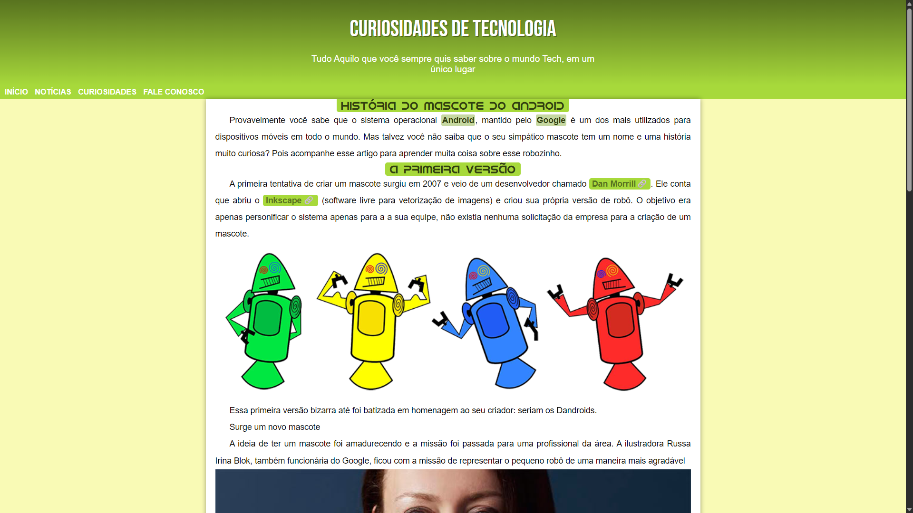
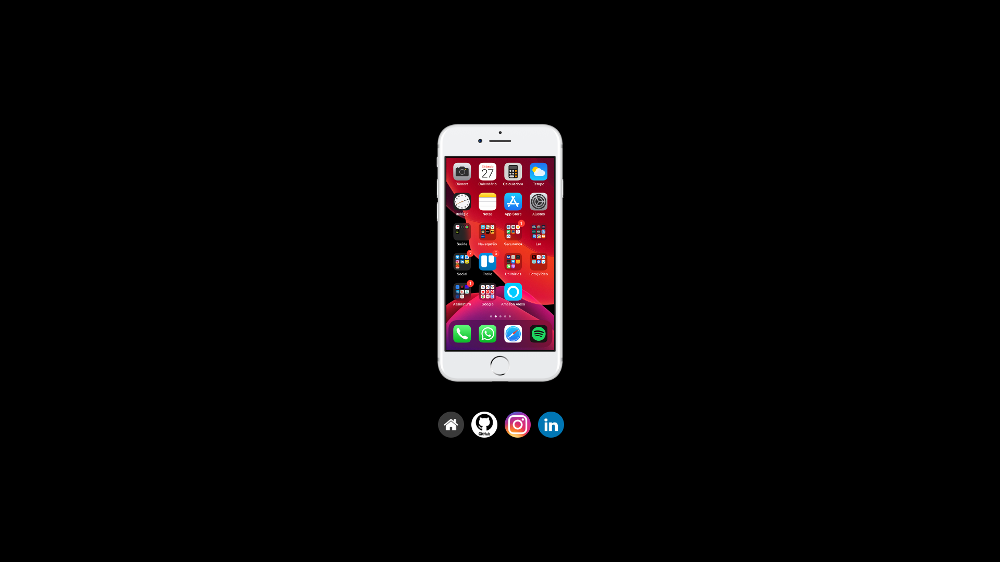
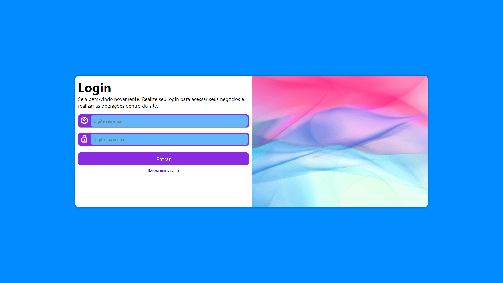
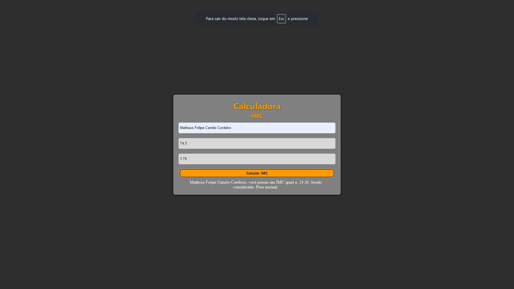
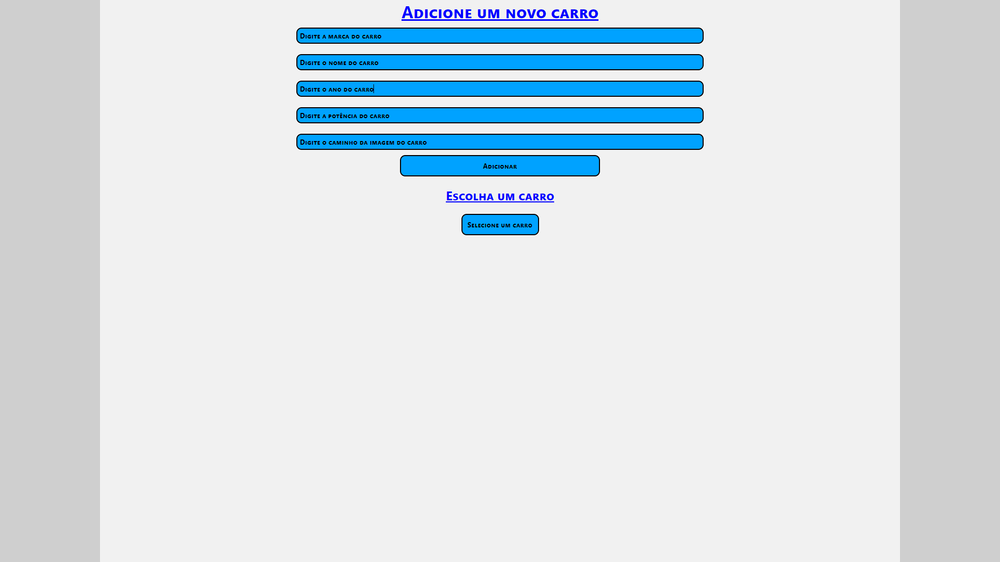

Matheus Cordeiro
Olá. meu nome é Matheus Cordeiro, tenho 20 anos. Atualmente cursando Analise e Desenvolvimento de sistemas. Sou um desenvolvedor front-end apaixonado por criar experiências digitais envolventes e funcionais. Com um olhar atento para o design e uma mente curiosa para a tecnologia, estou sempre em busca de novas maneiras de transformar ideias em realidade na web.
Formação
Analise e Desenvolvimento de Sistemas
Instituição: Estacio
Período: 2024 - Atualmente
Curso de HTML e CSS
Instituição: Curso em Video
Período: 2025
Curso de JavaScript
Instituição: Curso em Video
Período: 2025 - Atualmente
Projetos
Projeto 1:
Tecnologias Utilizadas: HTML e CSS
Descrição: Primeiro site que desenvolvi, assim que comecei a estudar HTML e CSS.
Mais informações
foi um site simples, com apenas 1 página, mas que me ajudou a entender a estrutura básica de um site e como utilizar o CSS para estilizar as páginas.
Não tinha muita responsividade, mas foi um ótimo começo, pois foi a partir dele que realmente dei o start no meu conhecimento de HTML e CSS.
Clique para entrar
Projeto 2:
Tecnologias Utilizadas: HTML, CSS
Descrição: Site de Cordel Virtual, um projeto que desenvolvi para praticar minhas habilidades em HTML e CSS.
Mais informações
Um site simples, mas desenvolvi para aplicar meus estudos com backgrounds, fixos, gradientes, posicionamento das imagens dentro do background. Ou melhor dizendo, para aplicar meus conhecimentos com propriedades de background.
Clique para entrar
Projeto 3:
Tecnologias Utilizadas: HTML, CSS
Descrição: Site de Redes Sociais em Iphone, um projeto que desenvolvi para praticar minhas habilidades em iframes.
Mais informações
Um site simples, mas desenvolvi para aplicar meus estudos com iframes, permitindo a incorporação de conteúdo de outras páginas de forma responsiva. Podendo selecionar qual tela você gostaria que aparecesse.
Clique para entrar
Projeto 4:
Tecnologias Utilizadas: HTML, CSS
Descrição: Tela de Login, um projeto que desenvolvi para praticar minhas habilidades em mediaQueries.
Mais informações
Um site apenas com o front-end finalizado, para aplicar meus estudos com mediaQueries, form, inputs, botões e responsividade.
Clique para entrar
Projeto 5:
Tecnologias Utilizadas: HTML, CSS, JAVASCRIPT
Descrição: Calculadora IMC feita para testar meus conhecimentos em JavaScript quando comecei a estudar sobre a linguagem
Mais informações
Um site que calcula o IMC do usuário e imprime na tela, o nome, o IMC e a classificação do IMC.
Clique para entrar
Projeto 6:
Tecnologias Utilizadas: HTML, CSS, JAVASCRIPT
Descrição: Site utilizando POO, alertas, inputs, buttons
Mais informações
Um site que o usuário pode adicionar carros, com marca, nome, ano, potência e imagem e então visualiza-los em um select. Aparecendo alertas quando não preenchido opções obrigátorias e não colocando dentro da OO, e quando enviado o formulário.
Clique para entrar